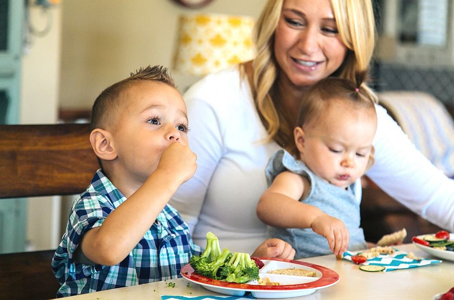
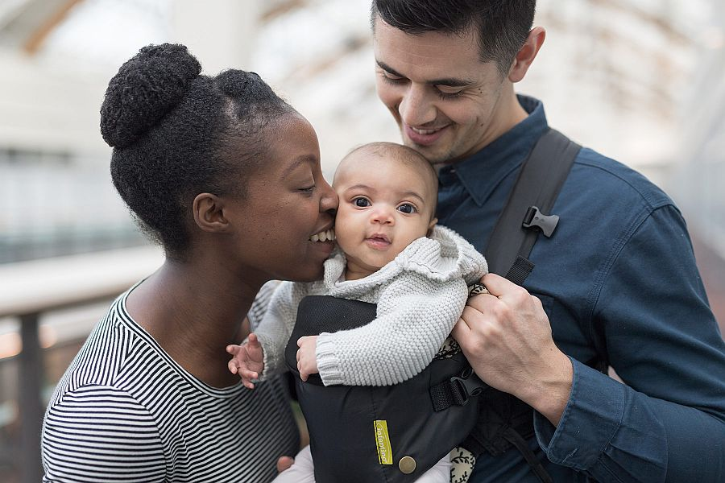

Peas & Bananas - ramblings of a dad's view - The forum for young parents

Weaning - Learning to Like New Tastes and Textures
Complementary feeding or weaning is introducing solid foods in addition to your baby's milk feeds. Babies develop at different rates so begin when your baby is ready - by six months, but not before four months. This is when healthy term babies are ready to learn new feeding skills.
Ten Steps for Healthy Toddlers
Toddlers need a varied, balanced diet to thrive. The Ten Steps for Healthy Toddlers provides a practical, easy-to-follow guide for all.
By following the steps, parents and carers will be giving toddlers a good start in life.
Toddler Meals: How Much Do They Need?
Fresh and convenience foods can contribute to a healthy balanced diet based on the five food groups. Some convenience foods are nutritious and suitable for toddlers. Others are low in key nutrients and may contain inappropriately high amounts of added salt / sodium, fat and sugar.
Healthy varied and well-balanced diet
Toddlers require a healthy varied and well-balanced diet to thrive and grow. During the course of the day toddlers should usually be offered three meals and two to three snacks. The foods they are given should be part of a mixed balanced diet designed to meet their nutritional needs


{kind=link}
Work With Us
We know our work makes a difference, both today and for future generations, but there is so much more we need to do..
Get in touch
With your help, we can reach more parents and families who need the support as well as work with more providers who play such an important part in shaping children's relationship with food.
© 2016 Peas & Bananas All Rights reserved | Website design by milo